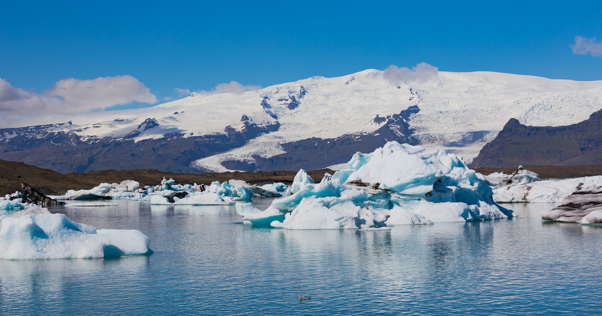
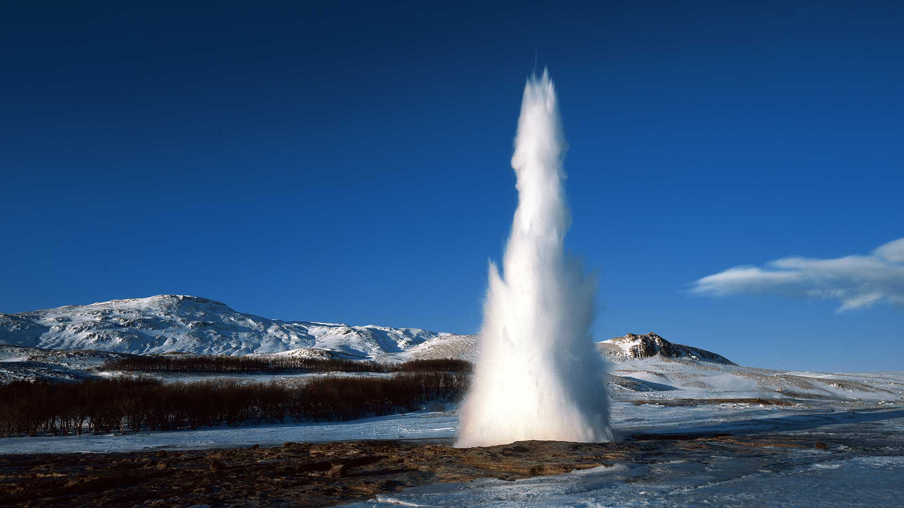

Исландия — это страна ледников, гейзеров, вулканов и водопадов, привлекающая тысячи туристов своими природными горячими ваннами под открытым небом и необыкновенными северными пейзажами. Гейзеры в Исландии не просто достопримечательности, интересные туристам, но и основа жизни, поскольку отопление жилых и рабочих помещения в стране осуществляется именно горячей водой из природных источников. Поэтому легкий запах серы чувствуется практически везде.
 Больше фотографий Исландия — самый большой в мире остров вулканического происхождения. Природные процессы, идущие в его недрах, активно продолжаются и в наше время. Извержения вулканов происходят в Исландии с завидной регулярностью, в среднем, каждые 4-5 лет. А землетрясения случаются ежедневно, к счастью для людей, незначительные, но приборы их фиксируют. Благодаря такой высокой сейсмоактивности, остров Исландия буквально напичкан термальными территориями, где на поверхность, из глубин земли, выходят природный кипяток, горячая грязь и раскалённый пар